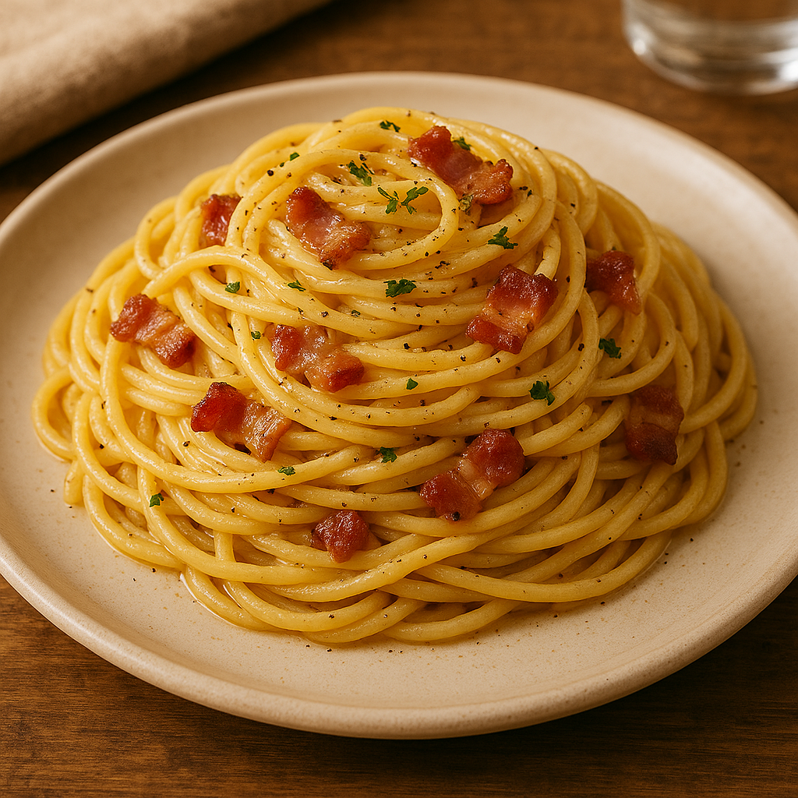

Home
Spaghetti Carbonara Recipe

Recipe Description
This is the best SPAGHETTI CARBONARA RECIPE!
Discover how to make traditional spaghetti carbonara.
This classic Italian pasta dish combines a silky cheese sauce with crisp pancetta and black pepper.
Ingredients:
- Pasta
- Eggs
- Guanciale
- Pecorino Romano Cheese
- Black Peper
Steps:
- Cook spaghetti al dente in salted boiling water (reserve 1 cup pasta water).
- Fry guanciale until crispy in a dry pan (medium heat). Add garlic if using, then discard.
- Whisk eggs, Pecorino, and generous black pepper in a bowl.
- Drain pasta, add to guanciale pan (heat off).
- Quickly mix in egg sauce, using pasta water to emulsify (prevents scrambling).
- Stir vigorously until creamy (~1 min).
- Adjust salt/pepper to taste.
- Serve immediately with extra Pecorino and pepper.